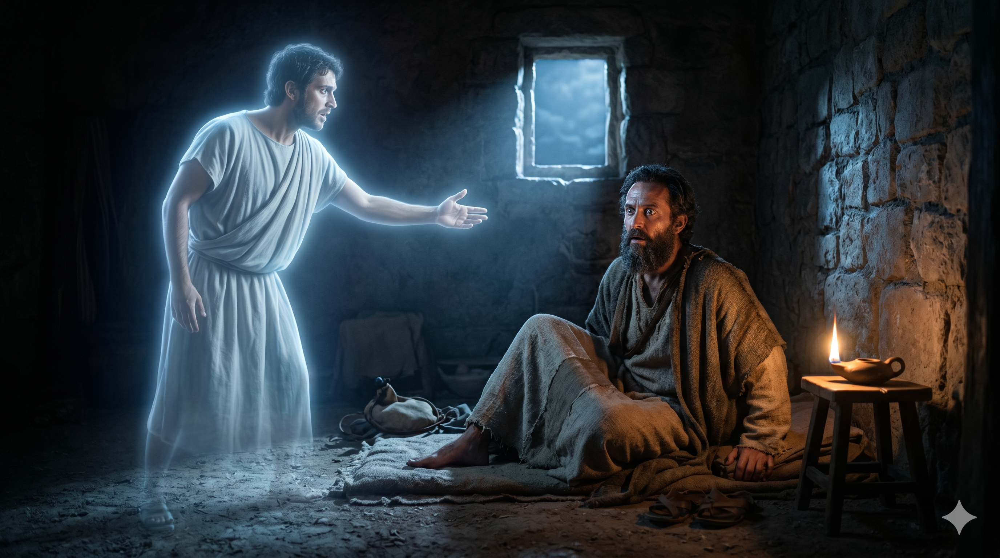
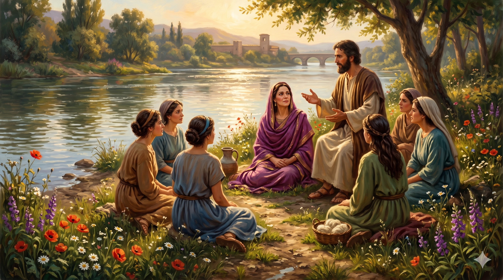

밤 환상 속에 나타난 마게도냐 사람이 "건너와서 우리를 도우라"고 간청하는 장면. 바울이 잠에서 깨어 창가에 무릎 꿇고 기도하는 새벽 빛.
밤에 환상이 바울에게 보이니 마게도냐 사람 하나가 서서 그에게 청하여 이르되 마게도냐로 건너와서 우리를 도우라 하거늘. 바울이 그 환상을 보았을 때 우리가 곧 마게도냐로 떠나기를 힘쓰니 이는 하나님이 저 사람들에게 복음을 전하라고 우리를 부르신 줄로 인정함이러라. 그 중 루디아라 하는 한 여자가 말을 듣고 있었는데 두아디라 시에서 온 자색 옷감 장사로서 하나님을 공경하는 자라 주께서 그 마음을 열어 바울의 말을 따르게 하신지라. — 사도행전 16:9-10, 14
바울 일행은 2차 선교여행 중에 놀라운 경험을 합니다. 성령이 아시아에서의 말씀 전하는 것을 허락하지 않으시고, 비두니아로 향하려 했을 때도 예수의 영이 허락하지 않으셨습니다. 어디로 가야 할지 모르는 상황에서 드로아까지 내려온 그날 밤, 바울에게 환상이 임합니다. 마게도냐 사람이 나타나 "건너와서 우리를 도우라" 간청하는 것이었습니다. 이 환상은 복음이 처음으로 아시아를 넘어 유럽 땅으로 건너가는 역사적 전환점이 됩니다. 하나님의 문 닫기는 더 좋은 문을 열기 위함이었습니다. 막힘이 있는 곳에 하나님의 더 큰 인도하심이 있었던 것입니다.
빌립보에 도착한 바울 일행은 안식일에 강가에 나갔습니다. 유대인 회당이 없는 곳에서는 물가에 모여 기도하는 관습이 있었기 때문입니다. 그곳에서 루디아를 만납니다. 그녀는 두아디라 출신의 자색 옷감 장사로, 하나님을 공경하는 여인이었습니다. 자색은 당시 가장 값비싼 염료로, 황제와 귀족들만 입을 수 있는 색이었습니다. 루디아는 상당한 재력과 지위를 가진 사업가였습니다. 바울이 말할 때 "주께서 그 마음을 열어" 바울의 말을 따르게 하셨다고 기록합니다. 구원은 사람의 능력이나 언변이 아니라, 하나님이 직접 마음의 문을 여심으로 이루어집니다. 루디아의 집은 이후 유럽 최초의 교회가 됩니다.

강가에서 바울의 말씀을 듣는 루디아와 여인들. 맑은 강물 옆 자색 옷감 상인 루디아의 눈빛이 진리를 향해 열려 가는 순간.
우리 삶에도 막힘의 순간들이 있습니다. 열심히 준비했는데 문이 닫히고, 분명히 옳은 방향이라고 생각했는데 길이 막히는 때가 있습니다. 바울은 그 막힘 앞에서 낙심하거나 억지로 밀고 나가지 않았습니다. 드로아까지 내려와 기다렸고, 그날 밤 환상을 받았습니다. 막힘은 하나님이 더 나은 방향으로 이끄시는 신호일 수 있습니다. 지금 당신 앞에 닫힌 문이 있다면, 그것이 하나님의 더 큰 열림을 위한 준비인지 생각해 보십시오. 막힘 뒤에 환상이 있었습니다.
루디아의 이야기는 또한 복음이 어떻게 역사하는지를 보여 줍니다. 주께서 그 마음을 여셨습니다. 우리가 가족이나 이웃에게 복음을 전할 때, 우리의 역할은 말씀을 신실하게 전하는 것이고, 마음을 여시는 것은 하나님의 일입니다. 이것을 알면 복음 전도에서 결과에 대한 부담감이 줄어들고, 오히려 담대함이 생깁니다. 하나님이 준비하신 루디아가 어딘가에 있습니다. 강가로 나가는 수고를 마다하지 마십시오.
막힌 문 뒤에 환상이 있었고,
강가의 한 여인이 유럽 교회의 첫 문이 되었습니다.
하나님이 닫으신 문 앞에서 환상을 구하십시오.